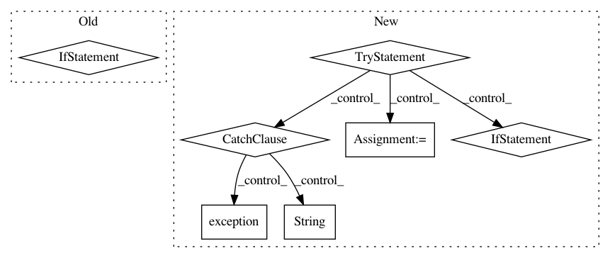

f31ee84bfdc6dc2325c8890412a965e509074d0a,streaming/python/runtime/task.py,InputStreamTask,run,#InputStreamTask#,132
Before Change
def run(self):
while self.running:
item = self.reader.read(self.read_timeout_millis)
if item is not None:
msg_data = item.body()
type_id = msg_data[:1]
if (type_id == serialization._PYTHON_TYPE_ID):
msg = self.python_serializer.deserialize(msg_data[1:])
else:
msg = self.cross_lang_serializer.deserialize(msg_data[1:])
self.processor.process(msg)
self.stopped = True
def cancel_task(self):
self.running = False
After Change
def run(self):
logger.info("Input task thread start.")
try:
while self.running:
self.worker.initial_state_lock.acquire()
try:
item = self.reader.read(self.read_timeout_millis)
self.is_initial_state = False
finally:
self.worker.initial_state_lock.release()
if item is None:
continue
if isinstance(item, DataMessage):
msg_data = item.body
type_id = msg_data[0]
if type_id == serialization.PYTHON_TYPE_ID:
msg = self.python_serializer.deserialize(msg_data[1:])
else:
msg = self.cross_lang_serializer.deserialize(
msg_data[1:])
self.processor.process(msg)
elif isinstance(item, CheckpointBarrier):
logger.info("Got barrier:{}".format(item))
logger.info("Start to do checkpoint {}.".format(
item.checkpoint_id))
input_points = item.get_input_checkpoints()
self.do_checkpoint(item.checkpoint_id, input_points)
logger.info("Do checkpoint {} success.".format(
item.checkpoint_id))
else:
raise RuntimeError(
"Unknown item type! item={}".format(item))
except ChannelInterruptException:
logger.info("queue has stopped.")
except BaseException as e:
logger.exception(
"Last success checkpointId={}, now occur error.".format(
self.last_checkpoint_id))
self.request_rollback(str(e))
logger.info("Source fetcher thread exit.")
self.stopped = True
def cancel_task(self):
In pattern: SUPERPATTERN
Frequency: 3
Non-data size: 7
Instances
Project Name: ray-project/ray
Commit Name: f31ee84bfdc6dc2325c8890412a965e509074d0a
Time: 2020-09-05
Author: wlx65005@gmail.com
File Name: streaming/python/runtime/task.py
Class Name: InputStreamTask
Method Name: run
Project Name: ray-project/ray
Commit Name: 1b1466748f1db72835a594d73d502e9787e080a9
Time: 2020-09-04
Author: wlx65005@gmail.com
File Name: streaming/python/runtime/task.py
Class Name: InputStreamTask
Method Name: run
Project Name: thenetcircle/dino
Commit Name: 3233032f5961762af0085ba0234c4cac91bc5e67
Time: 2018-08-26
Author: oscar.eriks@gmail.com
File Name: dino/hooks/message.py
Class Name: OnMessageHooks
Method Name: do_process